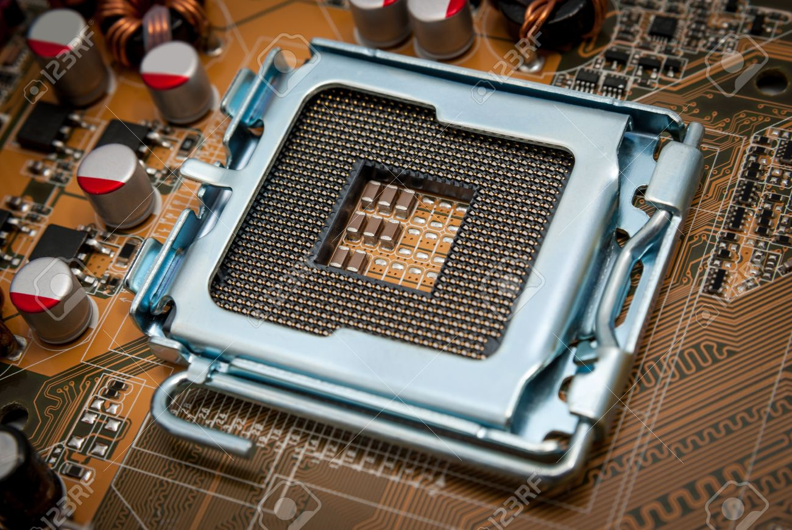
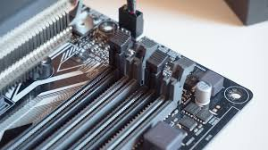

PC Build Guide(NOTE- Not Finished)
Building a PC is easier than you think. In addition to other things, it save you money, you get to decide exactly what parts to put in it, and it can be fun. Here are the steps:.
1. Prep
Like anything, you need to prep the area before you start. Before anything, take your Power Supply Unit(PSU) out of it's box and plug it in, but keep the switch off. Simply touch the metal on it to discharge your static electricity. Do this periodically during your build. Next, if you have one, put down your nonconductive mat on your table.
2. Motherboard Prep
There are 2 big steps to your PC build: Motherboard Assembly and Case Assembly. We'll prepare the motherboard for inserting it into the case. First, take your motherboard out of it's box and put it onto your mat(Be sure to discharge your static electricity first - you can put the motherboard on the box if you don't have a nonconductive mat.) Next, you're going to the most dangerous part of the build - the CPU.

A LGA CPU socket.
RAM
RAM is super easy to install. You just take your stick(s) and put them into the ram slots. Before installing your RAM, check your motherboard manual to determine which slots to use.

4 RAM slots.
CPU Cooler
To keep your CPU cool, you need a CPU cooler. There are different types: air coolers and water coolers. Water coolers are installed later - don't do them now. Air coolers are installed in different ways, so make sure you check your cooler manual. Also check your motherboard manual, because coolers usually use brackets and backplates on the motheroard.
M.2 Accessories
If you have M.2 accessories, install them now. You put the key in the slot, and push it into the slot. Then you screw it down.